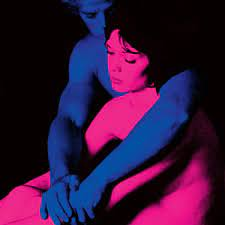

Fiii_Blog
-

MUSIC
TVGirl
TV Girl — американський інді-поп гурт із Сан-Дієго, штат Каліфорнія, до складу якого входять Бред Пітерінг, Джейсон Вайман і Ваятт Хармон.
Станом на 2023 рік група базується в Лос-Анджелесі.
Гурт випустив свої перші три мініальбоми у 2010 році та мікстейп у 2012 році.
Це один з моїх улюблених гуртів, бо в них цікава та спокійна музика.
Також по їхнім пісням легко вчити англійську.- Платформи
-
- Улюблені пісні
-
Cigarettes out the Window
Lovers Rock
Blue Hair
The Blonde
Loving Machine
My Girlfriend
-
MUSIC
Пиріг і батіг
«Пиріг і Батіг» — український фольк-гурт, заснований 2020 року у Львові;
створений Мар'яном Пирогом як музично-поетичний проєкт, метою якого є дослідження української мови та поетики і популяризація їх через музику.
Я дуже люблю цей український гурт! Можливо ви не чули про них, але вони просто чарівні.
Те як вони змогли дати друге дихання творам українських поєтів - справжня насолода для вух.
Ці парубки вже 2 рази були в нашому місті з волонтерськими концертами, тому вони я точно можу сказати, що вони неймовірні не тільки як музиканти, але й просто люди.
Обов'язково послухайте їхні пісні!- Платформи
-
- Улюблені пісні
- Гаї шумлять (1913)
Ви знаєте як липа шелестить (06.05.1911)
Танго смерті
-
MUSIC
STAY KIDS
Stray Kids — південнокорейський бой-бенд, сформований у 2018 році компанією JYP Entertainment через однойменне реаліті-шоу.
Колектив складається з восьми учасників: Бан Чан, Лі Но, Чанбін, Хьонджін, Хан, Фелікс, Синмін та Ай'Ен.
8 січня 2018 року вони випустили предебютний мініальбом Mixtape.
Десь півтора роки тому я почала цікавитись к-поп індустрією.
Ця історія почалась з невеликого відео з Феліксом в тік тоці.
Зацікавленість к-попом допомогла мені відволіктися від зайвих думок, привертаючи всю увагу до себе.- Платформи
-
- Улюблені пісні
- Chk Chk Boom
JJAM
Red Light
MOUNTAINS
MEGAVERSE
Lose My Breath (feat. Charlie Puth)
Super Bowl
CIRCUS
Social Path (feat. LiSA)
-
MUSIC
Скрябін
Андрі́й Вікторович Кузьме́нко — український співак, композитор, поет, письменник, телеведучий, продюсер, актор. Лідер гурту «Скрябін».
Герой України, кавалер Ордена «За заслуги» I ст. Заслужений артист Автономної Республіки Крим.
Мені здається це було очікуваним, адже хто не любе легенду української музичної індустрії?
Його творчість - це перлина сучасної української музики- Платформи
-
- Улюблені пісні
- Цукор
Говорили і курили
Маршрутка
Спи собі сама
Старі фотографії
Мовчати
Шмата
Добряк
Сам собі країна
Не даєшь
То є Львів
Кольорова
- Платформи
-
- Улюблені пісні
-
Ja cie kocham
Das ist gut fantastisch
Каділак
Маршрутка
Вихідний
Павук
Ялта
Мені повезло
Я і Сара

MUSIC
DZIDZIO
DZIDZIO — український попгурт, створений у 2009 році за
задумом і за підтримки Андрія Кузьменка та Олега Турка,
на
основі образу головного героя гурту, комедійного персонажа Дзідзя,
придуманого Михайлом Хомою.
Виступає в жанрі «комедійного антигламурного попу»
Саме те для гарного настою та наснаги, чи не так?